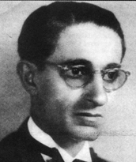

Natural de Taguatinga/TO, João de Abreu formou-se em Odontologia pela Faculdade de Medicina do Rio de Janeiro, em 1914, e em Direito pela Faculdade de Direito de Goiás, em 1922. Iniciou sua trajetória pública como intendente de Arraias entre 1912 e 1913, cidade onde construiu sua carreira política. Em 1935, foi eleito deputado estadual constituinte e, no ano seguinte, presidente da Assembleia Legislativa de Goiás. Assumiu o Governo do Estado de Goiás entre 1936 e 1937, e posteriormente ocupou o cargo de Diretor Geral da Fazenda. Em 1946, foi eleito deputado federal constituinte, sendo reeleito por mais dois mandatos, com atuação até 1959. Nesse ano, foi eleito vice-governador de Goiás na chapa de José Feliciano.
Encerrando sua carreira política, foi prefeito de Arraias entre 1968 e 1972. Também atuou como professor da Escola de Farmácia e Odontologia de Goiás e como Procurador da Fazenda Pública, em 1929. Publicou, em 1959, o livro Razões de uma Atitude. Faleceu em Goiânia, em 1976, aos 88 anos. Era pai de Divino Aires de Abreu e India Goiá de Abreu, fruto de seu casamento com Eva Aires D’Abreu. Sua primeira esposa foi Francisca do Espírito Santo Pereira de Abreu.
